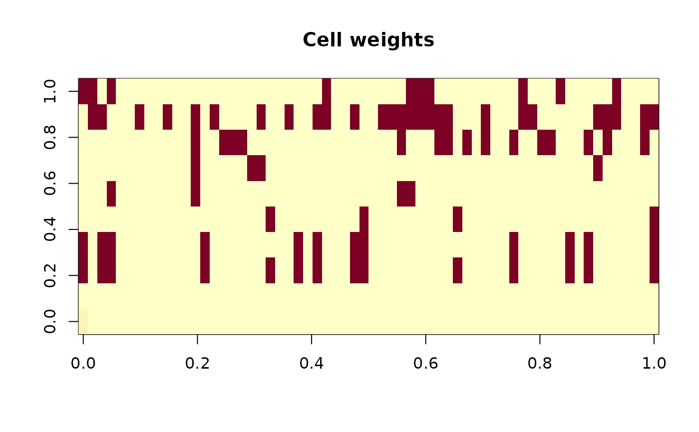
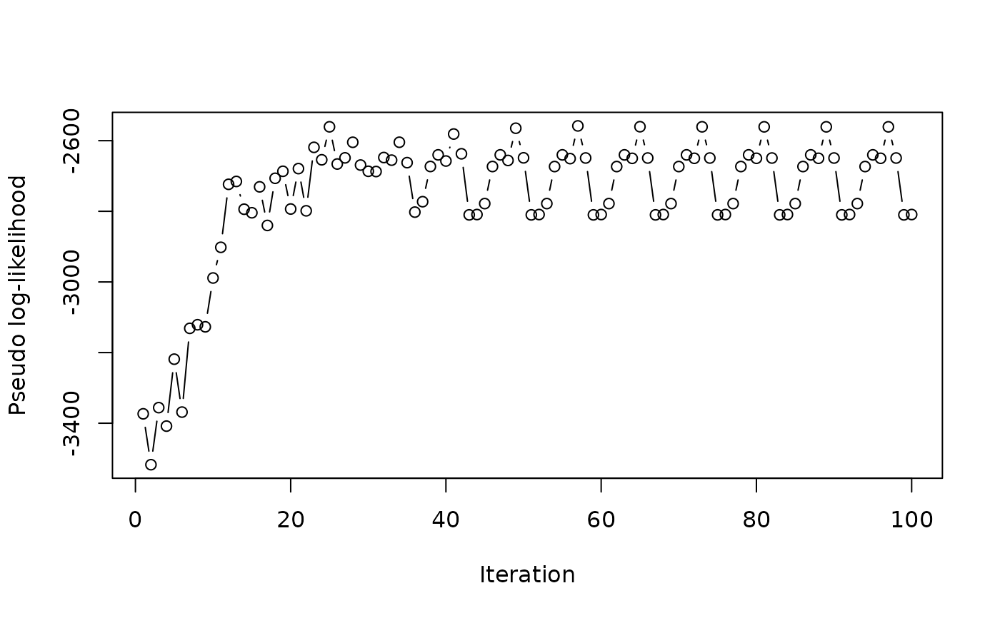

EM algorithm with latent contamination indicators that jointly estimates clean distribution parameters and identifies cellwise outliers. Each continuous cell has a posterior probability of being clean vs contaminated. The clean distribution is modeled as multivariate normal for continuous variables, with categorical variables handled via conditional multinomial logistic regression.
imputeCellEM(
data,
maxit_em = 100,
eps_em = 0.005,
gamma_init = 3,
eps_init = 0.1,
uncert = "conditional",
trace = FALSE
)data.frame with missing values (mixed continuous + categorical).
maximum EM iterations (default: 100).
convergence tolerance on the relative change in estimated parameters (mu, Sigma). Default: 5e-3.
initial scale inflation factor for the contamination
distribution. Contaminated cells are modeled as having variance
(gamma * sigma)^2 with gamma > 1. Default: 3.
initial contamination probability per variable (default: 0.1). Must be in \((0, 0.5)\).
imputation uncertainty method: "conditional"
(default) draws from the conditional normal distribution, or
"pmm" uses predictive mean matching.
logical; if TRUE, print progress information.
A list with components:
the imputed data.frame
n x p matrix of posterior clean probabilities. Continuous observed cells have values in \([0, 1]\); missing cells and categorical columns have weight 1.
estimated clean location vector (continuous variables only)
estimated clean covariance matrix (continuous variables only)
named numeric vector of estimated per-variable contamination rates (continuous variables only)
logical indicating convergence
number of EM iterations performed
numeric vector of composite (pseudo) log-likelihood values, one per iteration (computed after each M-step). This is a sum of per-variable conditional mixture log-likelihoods, not the proper observed-data joint log-likelihood.
The algorithm proceeds as follows:
Initialization. Missing values are filled by
initialise (medians for continuous, modes for
categorical). Initial location and scale are estimated robustly
(median and MAD). Cell weights are initialized to 1.
E-step (for each continuous variable \(j\), each observation \(i\)):
Compute the conditional mean and variance of \(x_{ij}\) given the other continuous variables, using the current \(\mu\) and \(\Sigma\).
For observed cells: compute the posterior probability that the cell is clean vs contaminated, yielding cell weight \(w_{ij}\).
For missing cells: impute from the conditional distribution (with optional PMM).
M-step:
Update \(\mu\): cell-weighted mean.
Update \(\Sigma\): pairwise cell-weighted covariance using \(w_{ij} \cdot w_{ik}\) (not row-level min).
Update contamination rates: \(\varepsilon_j = 1 - \mathrm{mean}(w_{ij})\) over observed cells.
Update contamination scale \(\gamma_j\) from weighted variance of contaminated cells.
For categorical variables: fit weighted multinomial logistic with row weights derived from continuous cell weights.
Convergence. Check relative change in
estimated parameters (\(\mu\), \(\Sigma\)); stop when
below eps_em or after maxit_em iterations.
The observed-data log-likelihood (sum of per-variable
conditional mixture log-likelihoods) is tracked for
diagnostics.
This method differs from cellGMM (Zaccaria et al., 2025) in using a single clean component rather than a mixture of clean clusters, and in supporting mixed continuous + categorical data.
The pseudo_loglik component is a composite (pseudo)
log-likelihood: the sum of per-variable conditional mixture
log-likelihoods, not the proper observed-data joint log-likelihood.
It is useful for monitoring convergence but should not be compared
across models or used for model selection criteria such as AIC/BIC.
This implementation is an ECM (Expectation Conditional Maximization) variant rather than a pure EM algorithm, because the conditional variance in the E-step is computed using the updated Sigma from the current M-step rather than the Sigma from the previous iteration. As a result, strict log-likelihood monotonicity is not guaranteed, but is observed empirically in practice.
Model uncertainty via bootstrap (Rubin's combining rules for multiple imputation) is not yet implemented. The current version provides single imputation with stochastic uncertainty (PMM or residual draw). For valid multiple imputation, call the function repeatedly with different seeds and combine using Rubin's rules.
A.P. Dempster, N.M. Laird, D.B. Rubin (1977) Maximum Likelihood from Incomplete Data via the EM Algorithm. Journal of the Royal Statistical Society: Series B, 39(1), 1–38.
C.F.J. Wu (1983) On the Convergence Properties of the EM Algorithm. The Annals of Statistics, 11(1), 95–103.
C. Raymaekers, P.J. Rousseeuw (2024) The cellwise minimum covariance determinant estimator. Journal of the American Statistical Association, 119(545), 576–588.
G. Zaccaria, L. Insolia, A. Farcomeni (2025) Robust model-based clustering with cellwise contamination. Technometrics, forthcoming.
M. Templ, A. Kowarik, P. Filzmoser (2011) Iterative stepwise regression imputation using standard and robust methods. Journal of Computational Statistics and Data Analysis, Vol. 55, pp. 2793–2806.
imputeCellIRMI, imputeCellM,
initialise, irmi
Other imputation methods:
hotdeck(),
impPCA(),
imputeCellIRMI(),
imputeCellM(),
imputeCellMCD(),
imputeCellwise(),
imputeRobust(),
imputeRobustChain(),
irmi(),
kNN(),
matchImpute(),
medianSamp(),
rangerImpute(),
regressionImp(),
sampleCat(),
vimmi,
vimpute(),
xgboostImpute()
# \donttest{
data(sleep, package = "VIM")
result <- imputeCellEM(sleep)
head(result$data_imputed)
#> BodyWgt BrainWgt NonD Dream Sleep Span Gest Pred Exp Danger
#> 1 6654.000 5712.0 261.5162 34.24212 3.3 38.60000 645 3 5 3
#> 2 1.000 6.6 6.3000 2.00000 8.3 4.50000 42 3 1 3
#> 3 3.385 44.5 261.5160 34.24170 12.5 14.00000 60 1 1 1
#> 4 0.920 5.7 261.5161 34.24225 16.5 -63.57845 25 5 2 3
#> 5 2547.000 4603.0 2.1000 1.80000 3.9 69.00000 624 3 5 4
#> 6 10.550 179.5 9.1000 0.70000 9.8 27.00000 180 4 4 4
# Inspect estimated contamination rates
result$epsilon
#> BodyWgt BrainWgt NonD Dream Sleep Span Gest Pred
#> 0.49 0.49 0.49 0.49 0.49 0.49 0.49 0.49
#> Exp Danger
#> 0.49 0.49
# Cell weight matrix (1 = clean, low = likely contaminated)
image(result$cellweights, main = "Cell weights")

# Log-likelihood trace
plot(result$pseudo_loglik, type = "b", xlab = "Iteration",
ylab = "Pseudo log-likelihood")

# With predictive mean matching for imputation
result2 <- imputeCellEM(sleep, uncert = "pmm", trace = TRUE)
#> --------------------------------------
#> cellEM: start of iteration 1
#> log-likelihood: -3373.3739
#> epsilon range: [ 0.49 , 0.49 ]
#> gamma range: [ 1.01 , 1.703 ]
#> --------------------------------------
#> cellEM: start of iteration 2
#> log-likelihood: -3517.4204
#> epsilon range: [ 0.49 , 0.49 ]
#> gamma range: [ 1.01 , 2.5461 ]
#> parameter change: 0.749186
#> --------------------------------------
#> cellEM: start of iteration 3
#> log-likelihood: -3355.8822
#> epsilon range: [ 0.2149 , 0.49 ]
#> gamma range: [ 1.01 , 2.962 ]
#> parameter change: 0.756899
#> --------------------------------------
#> cellEM: start of iteration 4
#> log-likelihood: -3408.1962
#> epsilon range: [ 0.4668 , 0.49 ]
#> gamma range: [ 1.01 , 3.7806 ]
#> parameter change: 13.0363
#> --------------------------------------
#> cellEM: start of iteration 5
#> log-likelihood: -3218.6519
#> epsilon range: [ 0.49 , 0.49 ]
#> gamma range: [ 1.01 , 6.0229 ]
#> parameter change: 1.14561
#> --------------------------------------
#> cellEM: start of iteration 6
#> log-likelihood: -3368.491
#> epsilon range: [ 0.4836 , 0.49 ]
#> gamma range: [ 1.01 , 68.1605 ]
#> parameter change: 1.11707
#> --------------------------------------
#> cellEM: start of iteration 7
#> log-likelihood: -3131.3632
#> epsilon range: [ 0.49 , 0.49 ]
#> gamma range: [ 1.01 , 99.4345 ]
#> parameter change: 0.836874
#> --------------------------------------
#> cellEM: start of iteration 8
#> log-likelihood: -3121.1872
#> epsilon range: [ 0.49 , 0.49 ]
#> gamma range: [ 1.01 , 82.6056 ]
#> parameter change: 0.752232
#> --------------------------------------
#> cellEM: start of iteration 9
#> log-likelihood: -3127.0606
#> epsilon range: [ 0.49 , 0.49 ]
#> gamma range: [ 1.01 , 85.9861 ]
#> parameter change: 0.686364
#> --------------------------------------
#> cellEM: start of iteration 10
#> log-likelihood: -2988.812
#> epsilon range: [ 0.49 , 0.49 ]
#> gamma range: [ 1.01 , 110.533 ]
#> parameter change: 0.476713
#> --------------------------------------
#> cellEM: start of iteration 11
#> log-likelihood: -2901.928
#> epsilon range: [ 0.49 , 0.49 ]
#> gamma range: [ 1.01 , 242.6742 ]
#> parameter change: 0.801609
#> --------------------------------------
#> cellEM: start of iteration 12
#> log-likelihood: -2723.5636
#> epsilon range: [ 0.49 , 0.49 ]
#> gamma range: [ 1.01 , 433.3493 ]
#> parameter change: 0.893698
#> --------------------------------------
#> cellEM: start of iteration 13
#> log-likelihood: -2715.4305
#> epsilon range: [ 0.49 , 0.49 ]
#> gamma range: [ 1.01 , 187.0453 ]
#> parameter change: 89.1203
#> --------------------------------------
#> cellEM: start of iteration 14
#> log-likelihood: -2794.0654
#> epsilon range: [ 0.49 , 0.49 ]
#> gamma range: [ 1.01 , 139.3917 ]
#> parameter change: 24.9498
#> --------------------------------------
#> cellEM: start of iteration 15
#> log-likelihood: -2804.1381
#> epsilon range: [ 0.49 , 0.49 ]
#> gamma range: [ 1.01 , 150.5891 ]
#> parameter change: 0.999959
#> --------------------------------------
#> cellEM: start of iteration 16
#> log-likelihood: -2730.7248
#> epsilon range: [ 0.49 , 0.49 ]
#> gamma range: [ 1.01 , 563.4647 ]
#> parameter change: 21.5889
#> --------------------------------------
#> cellEM: start of iteration 17
#> log-likelihood: -2840.0198
#> epsilon range: [ 0.49 , 0.49 ]
#> gamma range: [ 1.01 , 1209.8366 ]
#> parameter change: 0.99999
#> --------------------------------------
#> cellEM: start of iteration 18
#> log-likelihood: -2706.526
#> epsilon range: [ 0.49 , 0.49 ]
#> gamma range: [ 1.01 , 28.8037 ]
#> parameter change: 3619.85
#> --------------------------------------
#> cellEM: start of iteration 19
#> log-likelihood: -2686.6952
#> epsilon range: [ 0.49 , 0.49 ]
#> gamma range: [ 1.01 , 443.2427 ]
#> parameter change: 0.999989
#> --------------------------------------
#> cellEM: start of iteration 20
#> log-likelihood: -2793.5125
#> epsilon range: [ 0.49 , 0.49 ]
#> gamma range: [ 1.01 , 3044.1807 ]
#> parameter change: 0.999952
#> --------------------------------------
#> cellEM: start of iteration 21
#> log-likelihood: -2679.0941
#> epsilon range: [ 0.49 , 0.49 ]
#> gamma range: [ 1.01 , 732.261 ]
#> parameter change: 26393.2
#> --------------------------------------
#> cellEM: start of iteration 22
#> log-likelihood: -2798.6135
#> epsilon range: [ 0.49 , 0.49 ]
#> gamma range: [ 2.2221 , 3941.6867 ]
#> parameter change: 0.999995
#> --------------------------------------
#> cellEM: start of iteration 23
#> log-likelihood: -2618.8729
#> epsilon range: [ 0.49 , 0.49 ]
#> gamma range: [ 1.0955 , 461.6639 ]
#> parameter change: 1308.38
#> --------------------------------------
#> cellEM: start of iteration 24
#> log-likelihood: -2654.1438
#> epsilon range: [ 0.49 , 0.49 ]
#> gamma range: [ 1.01 , 787.6043 ]
#> parameter change: 21.5953
#> --------------------------------------
#> cellEM: start of iteration 25
#> log-likelihood: -2560.7619
#> epsilon range: [ 0.49 , 0.49 ]
#> gamma range: [ 1.1376 , 392.9904 ]
#> parameter change: 0.999971
#> --------------------------------------
#> cellEM: start of iteration 26
#> log-likelihood: -2666.0825
#> epsilon range: [ 0.49 , 0.49 ]
#> gamma range: [ 1.01 , 317.4227 ]
#> parameter change: 20.4909
#> --------------------------------------
#> cellEM: start of iteration 27
#> log-likelihood: -2648.6721
#> epsilon range: [ 0.49 , 0.49 ]
#> gamma range: [ 1.01 , 71.9031 ]
#> parameter change: 0.0903883
#> --------------------------------------
#> cellEM: start of iteration 28
#> log-likelihood: -2604.5402
#> epsilon range: [ 0.49 , 0.49 ]
#> gamma range: [ 1.01 , 236.3047 ]
#> parameter change: 0.999992
#> --------------------------------------
#> cellEM: start of iteration 29
#> log-likelihood: -2669.0446
#> epsilon range: [ 0.49 , 0.49 ]
#> gamma range: [ 1.01 , 58.3517 ]
#> parameter change: 38.8166
#> --------------------------------------
#> cellEM: start of iteration 30
#> log-likelihood: -2686.6838
#> epsilon range: [ 0.49 , 0.49 ]
#> gamma range: [ 1.01 , 177.6893 ]
#> parameter change: 0.566885
#> --------------------------------------
#> cellEM: start of iteration 31
#> log-likelihood: -2687.3772
#> epsilon range: [ 0.49 , 0.49 ]
#> gamma range: [ 1.01 , 460.5568 ]
#> parameter change: 0.0609497
#> --------------------------------------
#> cellEM: start of iteration 32
#> log-likelihood: -2647.7021
#> epsilon range: [ 0.49 , 0.49 ]
#> gamma range: [ 1.01 , 109.9781 ]
#> parameter change: 0.526468
#> --------------------------------------
#> cellEM: start of iteration 33
#> log-likelihood: -2655.1597
#> epsilon range: [ 0.49 , 0.49 ]
#> gamma range: [ 1.01 , 143.6564 ]
#> parameter change: 0.783629
#> --------------------------------------
#> cellEM: start of iteration 34
#> log-likelihood: -2604.4498
#> epsilon range: [ 0.49 , 0.49 ]
#> gamma range: [ 2.7567 , 402.3008 ]
#> parameter change: 0.905435
#> --------------------------------------
#> cellEM: start of iteration 35
#> log-likelihood: -2662.2221
#> epsilon range: [ 0.49 , 0.49 ]
#> gamma range: [ 1.367 , 66.7333 ]
#> parameter change: 2.83169
#> --------------------------------------
#> cellEM: start of iteration 36
#> log-likelihood: -2802.2818
#> epsilon range: [ 0.49 , 0.49 ]
#> gamma range: [ 28.0276 , 30439.8972 ]
#> parameter change: 1.04262
#> --------------------------------------
#> cellEM: start of iteration 37
#> log-likelihood: -2772.7966
#> epsilon range: [ 0.49 , 0.49 ]
#> gamma range: [ 214.1785 , 7811.8365 ]
#> parameter change: 0.0494632
#> --------------------------------------
#> cellEM: start of iteration 38
#> log-likelihood: -2673.1201
#> epsilon range: [ 0.49 , 0.49 ]
#> gamma range: [ 1.1376 , 13277.9293 ]
#> parameter change: 4308.48
#> --------------------------------------
#> cellEM: start of iteration 39
#> log-likelihood: -2640.2015
#> epsilon range: [ 0.49 , 0.49 ]
#> gamma range: [ 1.01 , 33.4239 ]
#> parameter change: 20.4909
#> --------------------------------------
#> cellEM: start of iteration 40
#> log-likelihood: -2657.597
#> epsilon range: [ 0.49 , 0.49 ]
#> gamma range: [ 1.01 , 105.8003 ]
#> parameter change: 0.101301
#> --------------------------------------
#> cellEM: start of iteration 41
#> log-likelihood: -2581.1636
#> epsilon range: [ 0.49 , 0.49 ]
#> gamma range: [ 1.01 , 63.4833 ]
#> parameter change: 0.968997
#> --------------------------------------
#> cellEM: start of iteration 42
#> log-likelihood: -2637.1747
#> epsilon range: [ 0.49 , 0.49 ]
#> gamma range: [ 1.01 , 110.2806 ]
#> parameter change: 3.05662
#> --------------------------------------
#> cellEM: start of iteration 43
#> log-likelihood: -2810.0767
#> epsilon range: [ 0.49 , 0.49 ]
#> gamma range: [ 14.7137 , 9303.2774 ]
#> parameter change: 0.999998
#> --------------------------------------
#> cellEM: start of iteration 44
#> log-likelihood: -2809.1228
#> epsilon range: [ 0.49 , 0.49 ]
#> gamma range: [ 218.1305 , 42830.4413 ]
#> parameter change: 0.884343
#> --------------------------------------
#> cellEM: start of iteration 45
#> log-likelihood: -2778.1648
#> epsilon range: [ 0.49 , 0.49 ]
#> gamma range: [ 239.967 , 7581.194 ]
#> parameter change: 14.0472
#> --------------------------------------
#> cellEM: start of iteration 46
#> log-likelihood: -2673.2159
#> epsilon range: [ 0.49 , 0.49 ]
#> gamma range: [ 1.1376 , 13267.4064 ]
#> parameter change: 5338.81
#> --------------------------------------
#> cellEM: start of iteration 47
#> log-likelihood: -2640.2014
#> epsilon range: [ 0.49 , 0.49 ]
#> gamma range: [ 1.01 , 33.423 ]
#> parameter change: 20.4909
#> --------------------------------------
#> cellEM: start of iteration 48
#> log-likelihood: -2655.9748
#> epsilon range: [ 0.49 , 0.49 ]
#> gamma range: [ 1.01 , 105.734 ]
#> parameter change: 0.101301
#> --------------------------------------
#> cellEM: start of iteration 49
#> log-likelihood: -2564.7695
#> epsilon range: [ 0.49 , 0.49 ]
#> gamma range: [ 1.01 , 63.473 ]
#> parameter change: 0.969024
#> --------------------------------------
#> cellEM: start of iteration 50
#> log-likelihood: -2648.6084
#> epsilon range: [ 0.49 , 0.49 ]
#> gamma range: [ 1.01 , 110.2331 ]
#> parameter change: 3.05502
#> --------------------------------------
#> cellEM: start of iteration 51
#> log-likelihood: -2810.0771
#> epsilon range: [ 0.49 , 0.49 ]
#> gamma range: [ 14.7679 , 9250.3369 ]
#> parameter change: 0.999998
#> --------------------------------------
#> cellEM: start of iteration 52
#> log-likelihood: -2809.1226
#> epsilon range: [ 0.49 , 0.49 ]
#> gamma range: [ 219.1667 , 35098.265 ]
#> parameter change: 0.885344
#> --------------------------------------
#> cellEM: start of iteration 53
#> log-likelihood: -2778.1648
#> epsilon range: [ 0.49 , 0.49 ]
#> gamma range: [ 239.967 , 7457.7999 ]
#> parameter change: 14.0471
#> --------------------------------------
#> cellEM: start of iteration 54
#> log-likelihood: -2673.2669
#> epsilon range: [ 0.49 , 0.49 ]
#> gamma range: [ 1.1376 , 13262.577 ]
#> parameter change: 5338.81
#> --------------------------------------
#> cellEM: start of iteration 55
#> log-likelihood: -2640.2014
#> epsilon range: [ 0.49 , 0.49 ]
#> gamma range: [ 1.01 , 33.423 ]
#> parameter change: 20.4909
#> --------------------------------------
#> cellEM: start of iteration 56
#> log-likelihood: -2650.8499
#> epsilon range: [ 0.49 , 0.49 ]
#> gamma range: [ 1.01 , 105.7235 ]
#> parameter change: 0.101301
#> --------------------------------------
#> cellEM: start of iteration 57
#> log-likelihood: -2558.1975
#> epsilon range: [ 0.49 , 0.49 ]
#> gamma range: [ 1.01 , 63.4716 ]
#> parameter change: 0.969028
#> --------------------------------------
#> cellEM: start of iteration 58
#> log-likelihood: -2649.0562
#> epsilon range: [ 0.49 , 0.49 ]
#> gamma range: [ 1.01 , 110.227 ]
#> parameter change: 3.05478
#> --------------------------------------
#> cellEM: start of iteration 59
#> log-likelihood: -2810.0772
#> epsilon range: [ 0.49 , 0.49 ]
#> gamma range: [ 14.7759 , 9242.535 ]
#> parameter change: 0.999998
#> --------------------------------------
#> cellEM: start of iteration 60
#> log-likelihood: -2809.1225
#> epsilon range: [ 0.49 , 0.49 ]
#> gamma range: [ 219.3194 , 34678.5007 ]
#> parameter change: 0.885492
#> --------------------------------------
#> cellEM: start of iteration 61
#> log-likelihood: -2778.1648
#> epsilon range: [ 0.49 , 0.49 ]
#> gamma range: [ 239.967 , 7440.3836 ]
#> parameter change: 14.0471
#> --------------------------------------
#> cellEM: start of iteration 62
#> log-likelihood: -2673.2737
#> epsilon range: [ 0.49 , 0.49 ]
#> gamma range: [ 1.1376 , 13261.9606 ]
#> parameter change: 5338.81
#> --------------------------------------
#> cellEM: start of iteration 63
#> log-likelihood: -2640.2014
#> epsilon range: [ 0.49 , 0.49 ]
#> gamma range: [ 1.01 , 33.423 ]
#> parameter change: 20.4909
#> --------------------------------------
#> cellEM: start of iteration 64
#> log-likelihood: -2650.0311
#> epsilon range: [ 0.49 , 0.49 ]
#> gamma range: [ 1.01 , 105.7219 ]
#> parameter change: 0.101301
#> --------------------------------------
#> cellEM: start of iteration 65
#> log-likelihood: -2560.5102
#> epsilon range: [ 0.49 , 0.49 ]
#> gamma range: [ 1.01 , 63.4714 ]
#> parameter change: 0.969028
#> --------------------------------------
#> cellEM: start of iteration 66
#> log-likelihood: -2649.1273
#> epsilon range: [ 0.49 , 0.49 ]
#> gamma range: [ 1.01 , 110.2261 ]
#> parameter change: 3.05475
#> --------------------------------------
#> cellEM: start of iteration 67
#> log-likelihood: -2810.0772
#> epsilon range: [ 0.49 , 0.49 ]
#> gamma range: [ 14.7771 , 9241.3887 ]
#> parameter change: 0.999998
#> --------------------------------------
#> cellEM: start of iteration 68
#> log-likelihood: -2809.1225
#> epsilon range: [ 0.49 , 0.49 ]
#> gamma range: [ 219.3418 , 34597.1322 ]
#> parameter change: 0.885513
#> --------------------------------------
#> cellEM: start of iteration 69
#> log-likelihood: -2778.1648
#> epsilon range: [ 0.49 , 0.49 ]
#> gamma range: [ 239.967 , 7437.8418 ]
#> parameter change: 14.0471
#> --------------------------------------
#> cellEM: start of iteration 70
#> log-likelihood: -2673.2747
#> epsilon range: [ 0.49 , 0.49 ]
#> gamma range: [ 1.1376 , 13261.8734 ]
#> parameter change: 5338.81
#> --------------------------------------
#> cellEM: start of iteration 71
#> log-likelihood: -2640.2014
#> epsilon range: [ 0.49 , 0.49 ]
#> gamma range: [ 1.01 , 33.423 ]
#> parameter change: 20.4909
#> --------------------------------------
#> cellEM: start of iteration 72
#> log-likelihood: -2649.9102
#> epsilon range: [ 0.49 , 0.49 ]
#> gamma range: [ 1.01 , 105.7217 ]
#> parameter change: 0.101301
#> --------------------------------------
#> cellEM: start of iteration 73
#> log-likelihood: -2560.7924
#> epsilon range: [ 0.49 , 0.49 ]
#> gamma range: [ 1.01 , 63.4713 ]
#> parameter change: 0.969028
#> --------------------------------------
#> cellEM: start of iteration 74
#> log-likelihood: -2649.138
#> epsilon range: [ 0.49 , 0.49 ]
#> gamma range: [ 1.01 , 110.226 ]
#> parameter change: 3.05474
#> --------------------------------------
#> cellEM: start of iteration 75
#> log-likelihood: -2810.0772
#> epsilon range: [ 0.49 , 0.49 ]
#> gamma range: [ 14.7773 , 9241.2203 ]
#> parameter change: 0.999998
#> --------------------------------------
#> cellEM: start of iteration 76
#> log-likelihood: -2809.1225
#> epsilon range: [ 0.49 , 0.49 ]
#> gamma range: [ 219.3451 , 34584.6426 ]
#> parameter change: 0.885517
#> --------------------------------------
#> cellEM: start of iteration 77
#> log-likelihood: -2778.1648
#> epsilon range: [ 0.49 , 0.49 ]
#> gamma range: [ 239.967 , 7437.4687 ]
#> parameter change: 14.0471
#> --------------------------------------
#> cellEM: start of iteration 78
#> log-likelihood: -2673.2748
#> epsilon range: [ 0.49 , 0.49 ]
#> gamma range: [ 1.1376 , 13261.86 ]
#> parameter change: 5338.81
#> --------------------------------------
#> cellEM: start of iteration 79
#> log-likelihood: -2640.2014
#> epsilon range: [ 0.49 , 0.49 ]
#> gamma range: [ 1.01 , 33.423 ]
#> parameter change: 20.4909
#> --------------------------------------
#> cellEM: start of iteration 80
#> log-likelihood: -2649.8924
#> epsilon range: [ 0.49 , 0.49 ]
#> gamma range: [ 1.01 , 105.7216 ]
#> parameter change: 0.101301
#> --------------------------------------
#> cellEM: start of iteration 81
#> log-likelihood: -2560.8312
#> epsilon range: [ 0.49 , 0.49 ]
#> gamma range: [ 1.01 , 63.4713 ]
#> parameter change: 0.969028
#> --------------------------------------
#> cellEM: start of iteration 82
#> log-likelihood: -2649.1397
#> epsilon range: [ 0.49 , 0.49 ]
#> gamma range: [ 1.01 , 110.226 ]
#> parameter change: 3.05474
#> --------------------------------------
#> cellEM: start of iteration 83
#> log-likelihood: -2810.0772
#> epsilon range: [ 0.49 , 0.49 ]
#> gamma range: [ 14.7773 , 9241.1956 ]
#> parameter change: 0.999998
#> --------------------------------------
#> cellEM: start of iteration 84
#> log-likelihood: -2809.1225
#> epsilon range: [ 0.49 , 0.49 ]
#> gamma range: [ 219.3456 , 34582.7976 ]
#> parameter change: 0.885517
#> --------------------------------------
#> cellEM: start of iteration 85
#> log-likelihood: -2778.1648
#> epsilon range: [ 0.49 , 0.49 ]
#> gamma range: [ 239.967 , 7437.4138 ]
#> parameter change: 14.0471
#> --------------------------------------
#> cellEM: start of iteration 86
#> log-likelihood: -2673.2749
#> epsilon range: [ 0.49 , 0.49 ]
#> gamma range: [ 1.1376 , 13261.8572 ]
#> parameter change: 5338.81
#> --------------------------------------
#> cellEM: start of iteration 87
#> log-likelihood: -2640.2014
#> epsilon range: [ 0.49 , 0.49 ]
#> gamma range: [ 1.01 , 33.423 ]
#> parameter change: 20.4909
#> --------------------------------------
#> cellEM: start of iteration 88
#> log-likelihood: -2649.8896
#> epsilon range: [ 0.49 , 0.49 ]
#> gamma range: [ 1.01 , 105.7216 ]
#> parameter change: 0.101301
#> --------------------------------------
#> cellEM: start of iteration 89
#> log-likelihood: -2560.8369
#> epsilon range: [ 0.49 , 0.49 ]
#> gamma range: [ 1.01 , 63.4713 ]
#> parameter change: 0.969028
#> --------------------------------------
#> cellEM: start of iteration 90
#> log-likelihood: -2649.14
#> epsilon range: [ 0.49 , 0.49 ]
#> gamma range: [ 1.01 , 110.226 ]
#> parameter change: 3.05474
#> --------------------------------------
#> cellEM: start of iteration 91
#> log-likelihood: -2810.0772
#> epsilon range: [ 0.49 , 0.49 ]
#> gamma range: [ 14.7773 , 9241.1919 ]
#> parameter change: 0.999998
#> --------------------------------------
#> cellEM: start of iteration 92
#> log-likelihood: -2809.1225
#> epsilon range: [ 0.49 , 0.49 ]
#> gamma range: [ 219.3457 , 34582.5264 ]
#> parameter change: 0.885517
#> --------------------------------------
#> cellEM: start of iteration 93
#> log-likelihood: -2778.1648
#> epsilon range: [ 0.49 , 0.49 ]
#> gamma range: [ 239.967 , 7437.4056 ]
#> parameter change: 14.0471
#> --------------------------------------
#> cellEM: start of iteration 94
#> log-likelihood: -2673.2749
#> epsilon range: [ 0.49 , 0.49 ]
#> gamma range: [ 1.1376 , 13261.8563 ]
#> parameter change: 5338.81
#> --------------------------------------
#> cellEM: start of iteration 95
#> log-likelihood: -2640.2014
#> epsilon range: [ 0.49 , 0.49 ]
#> gamma range: [ 1.01 , 33.423 ]
#> parameter change: 20.4909
#> --------------------------------------
#> cellEM: start of iteration 96
#> log-likelihood: -2649.8891
#> epsilon range: [ 0.49 , 0.49 ]
#> gamma range: [ 1.01 , 105.7216 ]
#> parameter change: 0.101301
#> --------------------------------------
#> cellEM: start of iteration 97
#> log-likelihood: -2560.8377
#> epsilon range: [ 0.49 , 0.49 ]
#> gamma range: [ 1.01 , 63.4713 ]
#> parameter change: 0.969028
#> --------------------------------------
#> cellEM: start of iteration 98
#> log-likelihood: -2649.1401
#> epsilon range: [ 0.49 , 0.49 ]
#> gamma range: [ 1.01 , 110.226 ]
#> parameter change: 3.05474
#> --------------------------------------
#> cellEM: start of iteration 99
#> log-likelihood: -2810.0772
#> epsilon range: [ 0.49 , 0.49 ]
#> gamma range: [ 14.7773 , 9241.1914 ]
#> parameter change: 0.999998
#> --------------------------------------
#> cellEM: start of iteration 100
#> log-likelihood: -2809.1225
#> epsilon range: [ 0.49 , 0.49 ]
#> gamma range: [ 219.3457 , 34582.4873 ]
#> parameter change: 0.885517
#> cellEM did not converge after 100 iterations.
# Mixed data example
data(testdata)
result3 <- imputeCellEM(testdata$wna)
# }